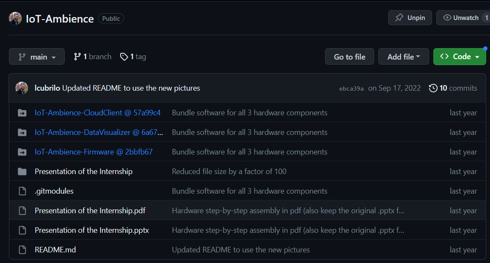

Praksu sam obavio u kompaniji Execom, koju je u međuvremenu
kupio HTEC. U pitanju je
outsourcing kompanija koja ima niz timova, svaki od kojih radi
na uglavnom jednom projektu za eksternog klijenta. Timovi se bave
različitim tehnologijama, u zavisnosti od potreba klijenta.
Slika 1: Logo kompanije Execom
Kao i svaka outsourcing kompanija, nema svoje interne
projekte, već ih isključivo uslužno pravi za druge. Važno je napomenuti
da je njihov nekadašnji interni projekat prerastao u tzv. spin
off kompaniju WolkAbout, čije cloud
tehnologije smo koristili na projektu koji sam izradio.
Tim u koji sam primljen bavi se sa IoT (Internet
of Things) i Embedded tehnologijama i u tom
momentu je radio sa dva različita klijenta na proizvodima koji su njima
bili potrebni, o čijim detaljima ne mogu govoriti zbog NDA
(Non-disclosure agreement) koji sam potpisao.
Srećom, projekat na kojem sam radio je smišljen od nule isključivo u
edukativne, odnosno svrhe moje prakse, te o njemu mogu govoriti.
Projekat je open-source i njegov kod je javno dostupan na mom ličnom GitHub
profilu.
Budući da ove oblasti (a posebno embedded) zahtevaju visok nivo
performansi, izabran je programski jezik C++. Njegova
prednost u odnosu na C jeste prisustvo
Objektno-orijentisane paradigme, koja nam je olakšala organizaciju
koda.
Takođe korišćen je i Qt Framework za
crossplatform GUI aplikaciju, koji je u potpunosti
objektno-orijentisan.
II Teorijski okvir
II-1.
Osnovni termini i oblast u kojoj se praksa radi
II-1.1. Embedded
programiranje
Embedded softver (od engl. embed,
“usaditi”) je računarski softver, napisan da kontroliše mašine ili
uređaje koji se obično ne smatraju računarima u punom smislu te reči,
poznatim kao embedded sistemi. Tipično su specijalizovani za određenu
hardversku platformu na kojoj rade i imaju vremenska i memorijska
ograničenja.1 Ovaj termin se
ponekad koristi
naizmenično sa firmware-om.2
Hardver na kojem se nalazi embedded softver, zbog prostornih
ograničenja ili energetskih ograničenja, je generalno manji i ne
preterano moćan, zbog čega je efikasnost softvera izuzetno važna.
Primeri gde se ovakav sofver koristi: 1. elektroniku automobila 2.
modemi 3. “mozak” robota 4. kućni aparati (posebno “pametni”) 5. igračke
6. sigurnosni sistemi 7. automatizovani sistemi proizvodnje.3
Ovaj softver može biti vrlo jednostavan, kao što su sistemi za
kontrolu osvetljenja koji rade na 8-bitnom mikrokontroleru sa nekoliko
kilobajta memorije. Međutim, embedded softver može postati vrlo
sofisticiran u aplikacijama kao što su ruteri, optički mrežni elementi,
avioni, rakete i sistemi za kontrolu procesa.4
II-1.2. Internet of Things
Internet of Things (IoT) odnosi se na mrežu fizičkih
uređaja, vozila, aparata i drugih fizičkih objekata koji su opremljeni
senzorima i/ili aktuatorima (motorima), softverom i mrežnom povezanošću
koji im omogućavaju prikupljanje i deljenje podataka. Ovi uređaji —
poznati i kao “pametni objekti” — mogu varirati od
jednostavnih “pametnih kuća” uređaja poput pametnih termostata, do
nosivih uređaja kao što su pametni satovi i odeća sa RFID tehnologijom,
do složenih industrijskih mašina i transportnih sistema. Tehnolozi čak
zamišljaju čitave “pametne gradove” zasnovane na IoT tehnologijama.5
Drugim rečima, IoT je sve ono što nekolicinu embedded uređaja, pomoću
računarskih mreža (bežične i žičane veze) uvezuje u jedan širi,
inteligentan sistem. Posebna vrednost je u tome što slab embedded
računar, može osnažiti resursima pravog računara sa kojim komunicira
(lokalni računar). To je ono što ovakvom sistemu omogućuje autonomno
reagovanje na uslove i obavljanje zadataka. Ova lokalna mreža uređaja
može da se poveže sa internetom, a odatle sa pametnim telefonima ili
stonim računarima na bilo kom kraju sveta.6
To znači da IoT sistemi mogu raditi praktično bilo šta, poput: 1.
praćenja ekoloških uslova na farmama 2. upravljanja saobraćajnim
modelima pomoću pametnih automobila i drugih pametnih saobraćajnih
uređaja 3. kontrole mašina i procesa u fabrikama 4. praćenja stanja
pacijenta i pružanja adekvatne doze medikamenta 5. do praćenja inventara
i pošiljki u skladištima.
Potencijalne primene IoT-a su ogromne i raznolike, a njegov uticaj se
već oseća u svim granama industrije. Kako broj uređaja povezanih sa
internetom nastavlja da raste, IoT će verovatno igrati sve važniju ulogu
u oblikovanju našeg sveta i transformaciji načina na koji živimo, radimo
i međusobno komuniciramo.7 IoT
takođe podstiče gomilanje
podataka koji se mogu koristiti u treniranju modela veštačke
inteligencije. 8
U najčešćim primenama u većim preduzećima, IoT uređaji se koriste za
praćenje širokog spektra parametara kao što su temperatura, vlažnost,
kvalitet vazduha, potrošnja energije i performanse mašina. Ovi podaci
mogu se analizirati u realnom vremenu kako bi se identifikovali obrasci,
trendovi i anomalije koji mogu pomoći preduzećima da optimizuju svoje
operacije i poboljšaju svoju profitabilnost.9
Ono što je zaista impresivno je da ova oblast svoje začetke ima još
iz 1982 godine, kada je Karnegi Melon univerzitet u saradnji sa Koka
Kolom napravio prvi pametni “vending machine” povezan sa
internetomsa tadašnjim ARPANETom!10
II-1.3. Cloud
computing - računarstvo u oblaku
Cloud computing[1] je mogućnost dobijanja resursa
računarskog sistema na zahtev, posebno skladišta podataka (oblak
skladištenja) i računarske snage, bez direktne aktivne uprave od strane
korisnika[2]. Ova tehnologija je postala popularna jer omogućava
fleksibilnost i skalabilnost; kompanije više ne moraju da ulažu u skupe
servere i održavanje infrastrukture. Veliki oblaci često imaju funkcije
raspoređene na više lokacija, svaka od kojih je podatkovni centar, što
dodatno povećava otpornost na greške i nudi bolju distribuciju
resursa.11
Slika 2: Dijagram koji prikazuje najčešće komponente jednog Cloud
computing sistema
Računarstvo u oblaku se oslanja na deljenje resursa da bi se postigla
koherentnost i obično koristi model “plati koliko koristiš”. Ovo ne samo
da pomaže u smanjenju kapitalnih rashoda (ulaganje u sopstveni hardver
za servere), ali i takođe sav rizik održavanja mreže (redundancija,
rezervne kopije, fizički problemi) prelazi na pružaoca cloud
usluge. Takođe značajno se olakšava skaliranje sopstvenih operacija,
prostim povećavanjem mesečnog budžeta na platformi. Ono što je bitno da
se uzme u obzir prilikom planiranja budžeta - je da je teško predvideti
generisane troškove na jednoj cloud platformi, i lako je greškom
“potrošiti impulse”.
Cloud je pre svega marketinški, a ne tehnički pojam. Njegova svrha je
da dočara sliku u kojoj celokupan skup hardvera i softvera biva
upravljan od strane provajdera (korisnik ne mora da brine o
pojedinostima implementacije, već svemu pristupa apstraktno i
programerski), pa se zato predstavlja kao amorfni oblak.
Kada je u pitanju IoT, cloud computing igra
ključnu ulogu jer omogućava brzu analizu i obradu velikih količina
podataka prikupljenih sa raznih uređaja. Osim toga, olakšava upravljanje
uređajima i omogućava lakšu integraciju sa ostalim sistemima. Ovo je
naročito korisno u primenama kao što su pametni domovi, industrijska
automatizacija i zdravstveni monitorinzi.
Cloud computing je omogućio pojavu jednog dominantnog biznis modela
na tržištu digitalnih proizvoda - Service as a Service
(SaaS), ali i srodnih Platform as a Service i
Infrastructure as a Service - koji teži da što veći segment
ovog tržišta pretvori u mesečne pretplate. To se postiže sklanjanjem
skoro svih podataka ali i operacija izvan klijentovog ličnog uređaja,
odnosno na serversku (cloud) stranu. 12
II-2. Organizacija rada i
tok prakse
Rad u timu je bio izuzetno kvalitetno organizovan u skladu sa vodećim
principima u industriji. Takođe je važno napomenuti da ne samo da su
uspešno implementirani, nego da su i međuljudski odnosi bili na visokom
nivou. Bilo je tolerancije i razumevanja, što je značajno pomoglo
prevazilaženju bilo kojih tehničkih problema. ### II-2.1. Onboarding Kao
i sve moderne IT kompanije, i Execom je imao spreman proces
onboarding-a, odnosno integrisanja novog zaposlenog
(ili praktikanta) u firmu. To podrazumeva kako tehničke informacije,
tako i one o vrednostima firme, kulturi firme, međuljudskim odnosima, pa
čak i običnim svakodnevnim protokolima (gde je kuhinja, gde radnik
ujutru prijavljuje dolazak karticom, gde je mašina za suđe, …).
Onboarding kao izraz, žargon je skovan u teorijama o
mendžmentu (odnosno upravljanju) iz ’70tih godina u Americi i definiše
se kao “mehanizam preko kojeg novi zaposleni stiču potrebna znanja,
veštine i ponašanja kako bi postali efikasni članovi i insajderi
organizacije”. U standardnom engleskom, ovo se naziva “indukcija”. U
Sjedinjenim Američkim Državama, do 25% radnika su novi članovi
organizacije uključeni u proces integrisanja.
Taktike korišćene u ovom procesu uključuju formalne sastanke,
predavanja, video materijale, štampane materijale ili orijentacije
zasnovane na računaru koje opisuju radne operacije i kulturu
organizacije u koju zaposleni ulazi. Ovaj proces je poznat u drugim
delovima sveta kao ‘indukcija’ ili obuka. U slučaju Execom-a, postojale
su unapred spremljene prezentacije koje su nam održane u sali za
sastanke, a za ostalo su se pobrinuli mentori, dok su HR bili dostupni
za sva pitanja.
Studije su dokumentovale da tehnike socijalizacije poput integrisanja
dovode do pozitivnih ishoda za nove zaposlene. To uključuje veće
zadovoljstvo poslom, bolje radne performanse, veću posvećenost
organizaciji i smanjenje profesionalnog stresa i namere za napuštanjem
posla.1314 ### II-2.2. Struktura
ljudi U odnosu na mojih prvih mesec dana u Execomu, gde sam prve sedmice
imao jednog mentora (koji je kasnije uključio još jednog mentora za
svakodnevnu komunikaciju i razjašnjavanje/rešavanje problema), u drugih
mesec dana sam imao sreću raditi sa čak dvojicom mentora i vođom tima
(koji je rukovodio projektom, vodio mentore i pomagao kad se oni
susretnu sa poteškoćama).
Budući da se drugi projekat sastojao iz više delova, te da je bio
veoma obiman za mesec dana rada, veći broj mentora je bio od presudnog
značaja za uspešno obavljanje svih zamišljenih radnih zaduženja na
projektu.
Budući da je svaki deo predstavljao gotovo skroz nezavistan komad
softvera, ukoliko bi došlo do prepreke na jednom, mogao sam to
iskomunicirati sa mentorima i jednostavno preći na drugi dok oni to
rešavaju. Ovim sistemom smo svi bili veoma zadovoljni i nismo imali
“praznog hoda”. ### II-2.3. Sastanci - tehnički deo U kompaniji Execom
korišćena je Agile metodologija, konkretnije
Scrum. Ključan koncept su tzv sprintovi,
odnosno period od 1-3 sedmice za koji se odredio spisak taskova koji
moraju da se obave, kao i ko će šta da radi. Nakon što je sprint
završen, radi se retrospektiva i proverava sa klijentom da li je
zadovoljan. Ključ je u ciklusima rada i povratne informacije koji se
brzu smenjuju. Time se sprečava situacija u kojoj tim dugo vremena radi
na nečemu što zapravo korisniku ne treba.
To podrazumeva specifičnu dinamiku sastanaka, koji uključuju sve
članove tima, uključujući product managera, scrum mastera i klijenta15:
daily (meeting) (takođe stand
meeting)
kratke sastanke svako (radno) jutro
svaki član tima objasni šta je radio juče, šta će danas
feedback na to od strane šefa
weekly (meeting)
uglavnom krajem sedmice
nešto duže sumacije do sada postignutog na nedeljnom nivou
nekad i tehničku demonstraciju (često neuglancanu) radi jasnije
komunikacije šta je postignuto i da li odgovara potrebama klijenta
U slučaju moje prakse, klijenta nije bilo, mada bi se klijentom mogli
smatrati svi mi članovi tima.
II-2.4. Sastanci - netehnički
deo
Pored toga, za praktikante je postojala još jedna forma nedeljnih
sastanaka sa jednim ili više HR (human resources) menadžera,
sredinom radne sedmice, sa kojima se pratio i “ne-tehnički” deo prakse -
utisci i zadovoljstvo praktikanta, uklapanje sa drugim članovima tima.
Iako se on činio neformalnim, HR menadžerke su beležile teze o čemu se
govorilo i povezivale su to sa utiscima mentora.
II-2.5. Finalna prezentacija
Kada je tehnička izvedba projekta počela da se privodi kraju, bio sam
obavešten da ću dobiti priliku da održim finalnu prezentaciju projekta.
Za razliku od prvog meseca u Execom-u gde je finalni sastanak i
sumiranje utisaka bilo isključivo iza zatvorenih vrata, sada sam imao
priliku uzeti aktivno učešće i time pozitivno uticati na konačnu
odluku/ponudu za daljnju saradnju (stipendiju ili zaposlenje).
Rečeno mi je da će na njoj prisustvovati HR tim Execoma, moja dva
mentora, vođa projekta, kao i Chief Technical Officer (CTO) firme, a da
bi bilo idealno da prezentaciju održim na engleskom uz fizičku
demonstraciju kako uređaj funkcioniše.
Biće više reči o njihovoj oceni mog rada, krajnjim ishodima prakse i
samog projekta u glavi IV - Zaključak.
II-3. Ključni korišćeni
alati
Pre početka ove prakse imao sam ograničenu svest o alatima koje ću na
kraju koristiti za implementaciju projekta, u čemu leži jedna velika
vrednost ove prakse. U najvećoj meri su mi prezentovani prilikom
onboarding procesa, uz kasnije temeljnije upoznavanje sa njima.
Ono što bih posebno istakao kao pozitivno iznenađenje jeste
otvorenost mentora i rukovodioca projekta da se neke odluke oko alata
ili projektovanja implementacije izmene, u skladu sa mojim
interesovanjima ili ranijim znanjima - sve je bilo otvoreno za diskusiju
i nije bilo glupih pitanja.
II-3.1. Arduino ekosistem
Arduino je italijanska Open Source kompanija i
zajednica korisnika koja dizajnira i proizvodi mikrokontrolere i setove
za izradu mikrokontrolera za izgradnju digitalnih uređaja.16 Arduino ploče su komercijalno
dostupne na zvaničnoj web stranici ili preko ovlašćenih distributera.
Pored toga, postoje i njihovi klonovi (gotovo identičnog dizajna i
strukture) velikog broja altenartivnih proizvođača (uglavnom iz Kine) i
jednog bogatog i širokog ekosistema, kako harverski tako i softverski.
Slika 3: Logo kompanije Arduino
Razlog zašto je to moguće jeste u tome što su njihovi hardverski
proizvodi su licencirani pod CC BY-SA licencom, dok je
softver licenciran pod GNU Lesser General Public License
(LGPL) ili GNU General Public License (GPL),
što omogućava bilo kome proizvodnju Arduino ploča i distribuciju
softvera.
Dizajni Arduino ploča koriste različite mikroprocesore i kontrolere.
Ploče su opremljene setovima digitalnih i analognih ulazno/izlaznih
(I/O) pinova koji mogu biti povezani sa raznim ekspanzionim pločama
(shieldovi) ili pločama za prototipiranje
(breadboards) i drugim električnim kolima.
Ploče imaju serijske komunikacione interfejse, tj na većini modela
USB, koji se takođe koriste za učitavanje programa (firmwarea).
Mikrokontroleri mogu biti programirani koristeći programerske jezike C i
C++ (Embedded C), koristeći standardni API koji je poznat kao
Arduino programski jezik, inspirisan jezikom Processing
i koristi se sa modifikovanom verzijom Processing IDE-a. Pored
korišćenja tradicionalnih alatki za kompilaciju, Arduino projekat pruža
integrisano razvojno okruženje (IDE) i
komandnu liniju razvijenu u Go-u.
Arduino projekat je započet 2005. godine kao alat za studente na
Institutu za interakcijski dizajn Ivrea, Italija, sa ciljem da pruži
jeftin i jednostavan način za početnike i profesionalce da stvaraju
uređaje koji interaguju sa svojom okolinom koristeći senzore i
aktuatore. Uobičajeni primeri takvih uređaja namenjeni su početnicima i
hobistima, uključujući jednostavne robote, termostate i detektore
pokreta.
Zbog toga su njihovi proizvodi izabrani za firmware (odnosno
hardverski “najniži” sloj projekta, najbliži metalu), jer olakšavaju
značajne glavobolje sa kojima se početnici susreću pri ulasku u IoT ili
robotiku.
II-3.2. Qt Framework
Qt (eng. izgovor kao “cute” ili “Q-T”; takođe srp.
“ku-te”) predstavlja više-platformski (cross-platform) softver
otvorenog tipa (open source) koji se koristi za razvoj
grafičkog korisničkog interfejsa (GUI). Njegova glavna prednost
je visok nivo performansi i ogromna širina platformi koje pokriva uz
minimalne izmene u samomg programu - od svih mobilnih operativnih
sistema, pa do desktop i čak embedded sistema.
Slika 4: Logo Qt
Poreklo mu seže iz ranih 90-tih, nakon čega ga kratko razvija Nokija,
a kasnije Qt postaje open-source fondacija “Qt Project” i preduzeće “The
Qt Company”. Iako su neke forme Qt i dalje dostupne open source, postoje
i komercijalne licence.
Qt je dosta širok framework, što znači da ima svoje “omotače”
(wrappers) za rešavanje ne samo grafičkog interfejsa, već i za
rad sa bazama podataka, procesorskim nitima, parsiranjem XML i JSON
datoteka, sopstvenom varijacijom HTML-a i CSS-a QML i QSS.
Iz svih ovih razloga, procenjuje se da je broj developera koji
koriste Qt prešao brojku od 1 miliona u 2017 godini - i zaslužan je za
ogroman broj open-source programa danas. Moguće ga je koristiti i putem
programskog jezika Python (PyQt6 ili PySide2)
Na praksi sam koristio Qt5 za C++.
III Sadržaj projekta
Kao što je već pomenuto, projekat je bio obiman i sadržao više
delova, koje ćemo pojedinačno razmotriti, kao i njihove interakcije. ##
III-1. Šira slika projekta Ono što je predstavljalo problem pri
komuniciranju ovog projekta drugim ljudima (npr HR menadžerima) jeste to
da iza njega nije stajala priča, problem koji rešava, razlog zašto on
postoji (pored, očigledno obrazovnog). Nije bilo lakog i kratkog načina
da ga svedem ili sumiram, odnosno nije bilo šire slike.
Svaki opis njega je nužno prelazio u opisivanje tehničkih
pojedinosti. Da bih taj problem prevazišao, za finalnu prezentaciju
rezultata sam naveo par potencijalnih primera kako se on može koristiti.
### III-1.1. Davanje konteksta - potencijalna primena (use
case) 1 Spoljno praćenje vremenskih prilika, prognoza
Postoji više hipotetičkih razloga zašto bi se neko nalazio u situaciji
da se ne može osloniti na meteorološke stanice u blizini: 1. Nalazi se
na izolovanom, slabo naseljenom području, tako da je najbliža
meteorološka stanica prilično udaljena 2. Nalazi se na području koje ima
posebnu mikroklimu, na primer kotlina, vrh brda i sl; tj u džepu
drugačijem od okolnih vremenskih prilika 3. Želja da se lično uveri u
podatke (lična znatiželja ili nepoverenje spram zvaničnih izvora)
Slika 5: Primer značajnih meteoroloških razlika na geografski malom
području
Postojeći sistem bi se lako mogao primeniti u ove svrhe. Sledeći
logični korak bilo bi razviti sistem predviđanja vremenskih prilika tj
prognoza na osnovu zabeleženih rezultata, najverovatnije na cloud
platformi (mada bi potencijalno moglo i na Raspberry Pi).
Ova primena bi bila relativno jednostavna, jer nije nužno potrebno
imati više od po jednog aktera u sistemu.
III-1.2.
Davanje konteksta - potencijalna primena (use case) 2
Unutrašnje praćenje i regulacija osetljivih procesa Ukoliko
se neko bavi skladištenjem osetljivih materija ili praćenjem osetljivih
procesa: 1. Skladištenje hrane, nestabilnih hemikalija itd 2.
Fermentacija, dry aging, dimljenje ili usoljavanje mesa,
kuvanje i bilo koji drugi proces gde je bezbednost hrane važna, a u
riziku 3. Uzgajanje useva (pogotovo u plasteniku) koji su osetljivi ili
izvan svoje sezone 4. Naučni eksperimenti, posebno koji se tiču
hidrostatike, gasova itd.
Slika 6: Mesara srednje veličine; vizualizacija razmere materijalne
štete u slučaju nepovoljnih uslova
Postojeći sistem bi se relativno lako mogao primeniti u ove svrhe.
Ono što bi bilo neophodno je dodati i neke aktuatore ili elektromotore,
koji na promene sa senzora mogu da reaguju i tako regulišu sve parametre
unutar određenih raspona. Naravno, ovakav sistem bi bio manje efektan od
komercijalnih proizvoda, ali je značajno jeftiniji i dovoljno dobar za
mikropreduzeća, amatere i hobiste.
Slika 7: Digitalno praćenje i održavanje plastenika; pametna bašta
Ovakve primene su nešto kompleksnije, ne samo jer zahtevaju
ozbiljnije teorijsko znanje za oblast primene, već zato što bi
najverovatnije zahtevalo više Arduino ploča (na primer po jednu u svakom
silosu žita; ili po jednu na svakih 15 metara u velikoj sušari mesa) i
više Raspberry Pi računara (svaki kao lokalni sakupljač podataka, unutar
Bluetooth dometa od senzora). Komunikacija među uređajima je uvek
predmet problematike i tačka spoticanja, tako da što je veći broj
uređaja istovremeno - tu su problemi sa koordinisanjem tih zahteva,
interferencija i verovatno potreba za većim dometom.
Takva primena bi u potpunosti kvalitetno iskoristila potencijale
ovakve arhitekture projekta (u suprotnom bi se dosta toga moglo staviti
u jedan uređaj).
III-2. Struktura projekta
III-2.1. Hardware
Projekat je uključivao tri zasebne hardverske komponente, svaku sa
pratećim softverom koji je bilo potrebno isprogramirati. Tu je bila i
četvrta komponenta, odnosno cloud platforma kompanije
WolkAbout.
Sagledaćemo redom svaku od ovih komponenti, prvo iz harverske
perspektive a zatim iz softverske.
Slika 8: Šema strukture projekta: tri hardverske komponente označene
sivom bojom, uz njihove uzajamne veze prikazane na slici
III-2.2. Sofware
Sva tri zasebna softvera uzajamno komuniciraju, tako da iako su
zasebne jedinice, sačinjavaju jednu veću labavu celinu. Kao što je
nagovešteno u 1.1. (use
case), moguće je imati više od jednog uređaja, za sva tri
aspekta (iako smo u našem prototipu imali po tačno jedan iz svake
kategorije).
Više Arduino uređaja može da se poveže na jedan Raspberry Pi (ali ne
i obrnuto), više Raspberry Pi može da se poveže na jedinu cloud
platformu (ali ne i obrnuto) i konačno više korisnika može da se poveže
na jedinu cloud platformu (ali ne i obrnuto).
Razvoj se obavljao na desktop računaru u Arduino IDE, nakon čega bi
se firmware serijskom vezom (kablom, punjačem od telefona) prebacivao na
Arduino ploču.
III-2.3. GitHub
repozitorijum
Kao što je već pomenuto, kompletan napisan kod se nalazi na mom
ličnom GitHub profilu: https://github.com/lcubrilo/IoT-Ambience

Slika 9: Screenshot sadržaja repozitorijuma
Uprkos tome, VCS (Version Control Software) koji smo mi
koristili prilikom obavljanja prakse bio je GitLab;
odnosno njegova internalna kompanijska verzija. Svaka od tri softverske
komponente bila je u zasebnom repozitorijumu (koje sam povezao u ovaj
krovni repozitorijum, u kojim sam uključio i finalnu prezentaciju).
Takođe smo organizovali raspodelu taskova, njihov status u stilu
Kanban ploča, pull requestove i feedback na njih putem GitLaba
u potpunosti simulirajući realne uslove rada i realne alate. U ovome sam
posebno uživao, prepoznao važnost i nastavio na sličan način
organizovati čak i samostalan programerski rad.
III-3. Arduino - prvi
korak, detekcija
III-3.1. Hardware - Arduino
Uno
Arduino Uno je Open Source mikrokontrolerska ploča
bazirana na Microchip ATmega328P, prvi put predstavljena 2010. godine.
Ploča ima 14 digitalnih i 6 analognih I/O pinova i može se napajati
putem USB kabla ili eksternog izvora napona između 7 i 20V.
Slika 10: Fotografija Arduino Uno razvojne ploče
Uno koristi isti mikrokontroler kao Arduino Nano, a ima iste
konektore kao Arduino Leonardo. Programira se pomoću Arduino IDE preko
USB tipa A kabla. Raspored i proizvodni fajlovi su dostupni pod Creative
Commons licencom.
Reč “Uno” je izabrana da označi značajnu preradu u Arduino seriji i
ova ploča je naslednik izdanja Duemilanove. Za komunikaciju koristi
STK500 protokol, ali se razlikuje od prethodnih modela jer ne koristi
FTDI USB-na-UART čip, već Atmega16U2 kao USB-na-serijski konverter.
III-3.2. Hardware -
Shields i clicks
Koristili smo jedan od mnogobrojnih dostupnih shieldova da
bismo olakšali konekcije sa drugim uređajima (izbegaavamo lemljenje žica
ili mukotrpno gledanje tzv pinout šema konekcija/pinova).
Slika 11: Fotografija Click shield u primeni sa jednim click
slotom popunjenim, a drugim praznim
Izabrali smo Click shield, čija je glavna svha da
omogućuje click-ove, odnosno male pločice sa individualnim
senzorima koje imaju standardno oblikovan i dimenzioniran raspored
pinova, koji (slično shieldu) jednostavno ulaze u uređaj bez upotrebe
žica.
Koristili smo 2 “klika” domaćeg preduzeća MikroEletronika:
1. Detektor temperature, vlage i pritiska vazduha. Takođe je bio
prisutan i senzor zapaljivih organskih jedinjenja koji nismo koristili.
(Environment click) 2. Bluetooth 4.0
(Low Energy) odašiljač informacija.
Slika 12: Fotografija environment click
Slika 13: Fotografija BLE click
III-3.3. Software -
Arduino firmware
Jednostavno povezivanje bilo kojeg eksternog uređaja, kao što su ovi
klikovi, kako hardverski a tako i softverski je ključna odlika Arduino
ekosistema. Da bismo iz firmwarea Arduino razvojne ploče slali komande u
komponente, potrebno je jednostavno instalirati softverske
pakete/ekstenzije namenjene za rad sa tim eksternim uređajem. Razlog
zašto toliki dijapazon eksternih uređaja ima svoje paekte, leži u tome
da je ceo ekosistem Open Source, te da mu bilo ko može doprinositi.
Za senzore vazduha koristio sam C biblioteke razvijene od kompanije
Adafruit, koja je dosta zastupljena i prepoznata u ovoj branši, i
to:
Adafruit_BME680.h - specijalizovan za Bosch-ov
detektor BME680 korišćen na ovom environment click-u.
Adafruit_Sensor.h - osnovna biblioteka za sve vrste
senzora, na koju se specijalizovane biblioteke oslanjaju.
Pored toga korišćene su još dve biblioteke za ove senzore (bme680.h,
bme680_defs.h) u razvojnom procesu, ali u krajnjoj verziji nisu imale
značajan uticaj.
Za Bluetooth komunikaciju niske energije (BLE - Bluetooth Low Energy)
korišćena je biblioteka BLEPeripheral.h
Tu se nalaze i definicije konstanti neophodnih za daljnje izvršavanje
programa (broj karakteristika koje merimo senzorima (temperatura,
pritisak, vlažnost), ID pinova itd)
Pre dubljeg ulaženja u kod, sagledajmo ovu šemu radi šire slike.
Na y osi se nalazi protok vremena, tj kako bi se inače i čitala šema
jednog algoritma.
Na x osi se nalazi tok podataka, odnosno kako prelaze iz senzora, u
softver i nadalje na Bluetooth odašiljač.
Slika 14: Šematski prikaz algoritma Arduina
Zelenom bojom sam označio sve što se tiče senzora, a plavom sve što
se tiče Bluetooth konekcije. Crvenom su označene pauze (kratke od 500ms
u toku ciklusa između svakog merenja i duge od 5000ms između celih
ciklusa)
Pored toga, možemo jasno uočiti da gornji deo pripada početnom
konfigurisanju stvari (setup) a donji deo pripada glavnoj
petlji (loop) - što ujedno predstavlja osnovnu gradivnu
jedincu svakog Arduino programa.
To nas prirodno vodi na analizu koda.
II- Prelazak u code
U setupu pozivamo funkcije koje nam inicijalizuju i osposobljavaju
ključne komponente - senzore i Bluetooth konekciju.
void setup(){ Serial.begin(9600); Serial.println("Started the firmware."); bluetoothLESetup(); atmosphereSensor.begin();}
loop() predstavlja petlju koja se neprekidno izvršava.
Možda na prvi pogled izgleda neobično. Međutim njena jezgrovitost
zavarava.
bool ok;void loop(){ bluetoothLE.poll();if(BLEconnected){do ok = sensor2cloud();while(ok);}}
Najprostije rečeno, u ¸petlji konstantno šaljemo podatke sa senzora
na Raspberry Pi koristeći funkciju sensor2cloud(). Ona
odmah vraća false ukoliko nije prošlo pet sekundi, koliko
smo odredili da bude učestalost učitavanja, ni ne ulazivši u svoje
izvršavanje i prekidajući do while petlju.
Naravno, pre nego što to uopšte probamo, moramo proveriti da li imamo
Bluetooth konekciju putem naše varijable BLEconnected, koja
se menja u skladu u poremećajima ili ponovnom uspostavljanju
komunikacije putem funkcija koje smo mi definisali, koje reaguju na
event-ove koje poll-ujemo odnosno
proveravamo/osvežavamo.
Pređimo u sledećem delu na hendlovanje eventova.
III-
Inicijalizacija i Podešavanje BLE
Prvo moramo definisati instancu klase BLEPeripheral.
Nad njom se podešavaju osnovni parametri za BLE, uključujući
imenovanje uređaja korišćenje pretprocesorskih konstanti za pinove
definisanih iznad i hendlovanje događaja povezivanja ili prekida sa
mojim funkcijama connectToBLE() i
disconnectFromBLE() - o čemu će biti više reči.
Funkcija nastavlja dalje podešavanjem atributa (servis sa šifrom,
karakteristika i deskriptor); na isti način za svako od tri merenja.
Kada je sve spremno, objekat bluetoothLE konačno pokreće i
ispisuje obaveštenje na serijsku vezu.
//... bluetoothLE.setAdvertisedServiceUuid(ts.uuid()); bluetoothLE.addAttribute(ts); bluetoothLE.addAttribute(tc); bluetoothLE.addAttribute(td);//...// na istovetan način za pritisak i vazduh//... bluetoothLE.begin(); Serial.println("Finished setting up the BLE.");}
Hajde da objasnimo šta su ts, tc i
td iz odlomka iznad.
U ovom segmentu, BLE servis se inicijalizuje i konfiguriše za
prenošenje podataka o temperaturi na adresi CCC0, zajedno
sa karakteristikama i deskriptorom toga za šta je namenjen.
Na istovetan način se inicijalizacija i konfiguracija obavlja i za
pritisak i za vlažnost vazduha, samo na drugim adresama i sa drugačijim
deskriptorima.
A ovde su i definicije funkcija koje hendluju konekcije:
Sada shvatamo zašto se u loop koristila promenljiva
BLEconnected, šta je njome upravljalo i koju je vezu imalo
sa metodom bluetoothLE.poll().
IV- Čitanje i
Slanje Senzorskih Podataka
Pogledajmo glavnu funkciju koja se bavi učitavanjem podataka
sensor2cloud(), koju smo videli u loop().
Krenućemo od samog kraja ove funkcije, gde objašnjavamo kako
cikliramo kroz sve moguće karakteristike koje imamo (u našem slučaju -
temperatura, pritisak, vlažnost). Kada to shvatimo, ostatak će imati
smisla.
Svaki put kada se ova funkcija obavi, iterator se pomera za jedan, a
ako je dosegao maksimum vraća se na početak, kao i tajmer koji se
resetuje.
//If we've went through all of them, it's time to start overif(characteristicsIterator == NO_OF_CHARS){ previousMillis = currentMillis; characteristicsIterator =0; Serial.println("---------");} characteristicsIterator++;returntrue;}
Sa tim u vidu, sada možemo krenuti od početka funkcije - figurativno
govoreći “gledamo na štopericu” (tj. milis()) i gledamo
koliko je prošlo otkako smo ušli u ovaj ciklus (vreme ubeleženo u
previousMillis).
Određeno je da pauza treba biti 5000ms, nakon čega ide učitavanje
jedne karakteristike, pauza od 500ms, pa sledeća i tako redom do
kraja.
bool sensor2cloud(){int currentMillis = millis();//Burst of all options within 5 seconds, with 0.5 second pauses between optionsif((currentMillis - previousMillis)<(5000+(characteristicsIterator *500)))returnfalse;//If enough time has passed, get to work://...
Ukoliko nije prošlo dovoljno vremena, funkcija vraća
false i ništa se dalje ne odvija.
Međutim, ako je prošlo dovoljno vremena, idemo dalje. Koristeći
switch case “dekodiramo” naš indeks koji iterira - gde svako merenje ima
svoj indeks. U skladu sa vrednoću ovog iteratora, učitavamo ili
temperaturu ili pritisak ili vlažnost.
//...int Value;//getting from the proper sensorswitch(characteristicsIterator){case1: Value =int(atmosphereSensor.readTemperature()); Serial.print("Read temp: ");break;case2: Value =int(atmosphereSensor.readPressure()/100); Serial.print("Read pres: ");break;case3: Value =int(atmosphereSensor.readHumidity()); Serial.print("Read humi: ");break;}//...
Koja god od karakteristika da je učitana u vrednost, ispisujemo je na
ekran (da bismo odmah videli šta se dešava bez čekanja).
Tek posle toga pokušavamo da je pošaljemo na odgovarajuću Bluetooth
karakteristiku (što potencijalno može poći po zlu, greškom u konekciji
ali ne i senzoru).
//Printing the decimal value for humans, and the hex (since it is stored in hex) Serial.print(Value); Serial.print(" hex: "); Serial.println(Value, HEX);//sending to the proper characteristicswitch(characteristicsIterator){case1: tc.setValue(Value);break;case2: pc.setValue(Value);break;case3: hc.setValue(Value);break;}}
I tako smo došli do kraja ove ključne funkcije, a time i do
celokupnog firmware-a za Arduino.
V- Prostor za
unapređenja u budućnosti
Razmatrali smo sledeće mogućnosti za unapređenje, ukoliko bi projekat
prešao u sledeću fazu:
Omogućiti da i druge vrste klikova sakupljaju podatke
Dodati LED lampe koje daju indikator o trenutnom stanju uređaja
Dodati LCD koji bi mogao da ispisuje podatke koji su inače vidljivi
samo preko serijske veze
Da se uređaj bolje advertizuje tj jasnije i vidljivije
prikazuje drugim uređajima
Dodati fizičke prekidače kojima menjamo merne jedinice
III-4. Raspberry Pi -
posrednik
III-4.1. Hardware - Raspberry
Pi
Raspberry Pi je serija malih računara na jednoj
ploči (SBCs) razvijenih u Ujedinjenom Kraljevstvu od strane Fondacije
Raspberry Pi u saradnji sa Broadcom-om. Originalni cilj Raspberry Pi
projekta bio je promocija osnovnog računarskog obrazovanja u školama.
Originalni model postao je popularniji nego što je bilo očekivano,
prodavajući se izvan svoje ciljne tržišne niše za upotrebe kao što su
robotika. Široko se koristi u mnogim oblastima, kao što su nadgledanje
vremenskih uslova, zbog svoje niske cene, modularnosti i otvorenog
dizajna. Obično ga koriste zaljubljenici u računare i elektroniku, zbog
njegovog usvajanja HDMI i USB standarda.
Slika 15: Fotografija Raspberry Pi 3 Model B, poput onog korišćenog na
praksi
Nakon izdavanja druge vrste ploče, Fondacija Raspberry Pi je osnovala
novi entitet, nazvan Raspberry Pi Trading, i postavila Ebena Uptona za
izvršnog direktora, sa odgovornošću za razvoj tehnologije. Fondacija je
ponovo posvećena kao obrazovna dobrotvorna organizacija za promociju
osnovnog računarskog obrazovanja u školama i zemljama. Većina Pis-a se
proizvodi u Sonijevoj fabrici u Pencoedu u Velsu, dok se drugi proizvode
u Kini i Japanu.
2015, Raspberry Pi je postao najprodavaniji britanski računar.
Ono što je za njih zanimljivo jeste, pored neograničene primene u
projektima entuzijasta i hobista, jeste da u potpunosti mogu poslužiti
kao desktop računari, sa sve periferijama (tastatura, miš, monitor). Na
njega smo zakačili BLE 4.0 prijemnik koji je primao poruke sa Arduina
(očitane vrednosti sa senzora). Putem Ethernet (LAN) kabla se kačio na
internet i komunicirao sa cloud platformom WolkAbout.
III-4.2. Software
- Raspberry Pi Cloud Client
Softver za Raspberry Pi je razvijen u programskom jeziku C++. U
početku smo za razvoj koristili SSH vezu, tako da je RPi bio u
“headless” režimu. To znači da sam razvoj radio na svom stonom računaru,
i onda slao code, slično radu sa Arduinom. Usled mnogobrojnih problema u
komunikaciji mog Windows računara i Linux-a na RPi (Raspberry Pi OS)
prešli smo na upotrebu RPi kao samostalnog računara, povezanog na TV sa
svojim periferijama (miš, tastatura).
Program se bavi prikupljanjem podataka sa BLE (Bluetooth Low Energy)
konekcije sa Arduinom i njihovim slanjem na WolkAbout IoT platformu. Od
biblioteka, korišćene su: 1. Gattlib++ za BLE komunikaciju 2. Wolk.h za
komunikaciju sa WolkAbout platformom (bazirano na MQTT protokolu)
III-4.3.
Raspberry Pi - Detaljna Analiza Koda
III-5.1. Šira slika i šema
Slično kao i na prethodnoj šemi, i ovde x i y ose prikazuju
vremensko-prostorno kretanje podataka kroz program. Takođe opet imamo
inicijalno nameštanje veze sa ulazom i izlazom, i imamo petlju, gde
asinhrono čekamo notifikacije sa Arduina.
Podatke šaljemo MQTT protokolom na portove koje smo definisali kako u
kodu ovde, tako i na WolkAbout platformi.
Slika 16: Šematski prikaz algoritma Raspberry Pi
Hajdemo sada da pređemo u precizniju implementaciju.
III-5.2. Uključivanje
Biblioteka
Kod počinje sa uključivanjem potrebnih biblioteka:
#include <Gattlibpp.h>#include <iostream>#include <unistd.h>// for usleep#include "Wolk.h"
Gattlibpp.h: Za BLE (Bluetooth Low Energy)
komunikaciju.
iostream: Za rad sa standardnim I/O streamovima.
unistd.h: Za funkciju usleep koja
omogućava pauze između iteracija.
Wolk.h: Za komunikaciju sa WolkAbout platformom.
III-5.3.
Definisanje Enumeracija i Globalnih Promenljivih
Definišemo enumeracije, umesto direktnog rada sa integerima ovde.
Takođe definišemo objekat wolk nad kojim radimo sve
operacije.
BLEDeviceUUID: Jedinstveni identifikator uređaja na
kojem sam radio.
serviceUUIDs i characteristicUUIDs:
UUID-ovi za servise i karakteristike koje smo definisali u Arduino
kodu.
III-5.5. Funkcije za
Obaveštenja
Ove funkcije obrađuju dolazne podatke sa BLE uređaja.
notificationCallback: Opšta funkcija za obradu podataka.
Dodaje podatke u wolk instancu i ispisuje ih.
Prvo radimo operacije sa bitovima
void notificationCallback(const Gattlib::BinaryBuffer &data, AirCharacteristic x){ Gattlib::BinaryBuffer::const_iterator i = data.begin();//We receive a 4 digit hexadecimal number, always split into 2 packages.//First package represents last 2 digits and vice versa//Sometimes the first 2 digits are zeros. We don't care about them.int firstPacket =(int)*i++, secondPacket =(int)*i;int value =(secondPacket <<8)+ firstPacket;
Zatim kada smo obradili dve heksadecimalne vrednosti i isparsirali
ih, možemo te podatke slati u zavisnosti od argumenta x:
Ova funkcija inicijalizuje Wolk i BLE jedinice i upravlja njihovom
interakcijom.
Wolk Setup
Povezivanje se na WolkAbout platformu:
int main(int argc,char*argv[]){ wolkabout::Device WolkDeviceCredentials("471d6850-8bed-4eca-9e6e-97fd9300b117","5B2OD76EC4"); wolk = wolkabout::Wolk::newBuilder(WolkDeviceCredentials).host("ssl://api-demo.wolkabout.com:8883").build(); wolk->connect();std::cout <<"Connected to Wolk."<<std::endl;//...
BLE Setup
Povezuje se na BLE uređaj i omogućava obaveštenja za odabrane servise
i karakteristike. Ovo je nešto kompleksnije zato što koristi lambda
funkcije u C++.
Pokušava se arduino -> enable(), a ako je uspešan
zatim i arduino -> connect():
Da sumiramo, šira slika ovakve ugnježdene lambda sintakse izgleda
ovako:
//BLE setup arduino -> enable([](){// Prvi deo codea ako je enable uspeo, pa grananje arduino ->connect(BLEDeviceUUID,[]()//succ connect{// Code ako su i enable i connect uspeli },[](){// Code ako je enable uspeo, ali connect nije});},[](){// Code ako enable nije uspeo// (nismo ni mogli da probamo connect)});
Glavna Petlja
Nakon uspostavljanja cloud i ble konekcije, imamo jednostavnu petlju,
gde program spava na 50 milisekundi (50.000 mikrosekundi) pa čita da li
je išta stiglo sa Arduina. Na taj način kontinuirano obrađujemo
asinhrone događaje.
III-5.
WolkAbout Cloud Platforma - centrala informacija
III-5.1. “Hardware” Cloud
platforme?
Kao što je pomenuto u 1.3. Cloud computing
- računarstvo u oblaku glavna vrednost je upravo u tome da se
developer ne mora baviti hardverskim pojedinostima, već isključivo
apstrakcijom i softverom.
WolkAbout Cloud platforma je gotov proizvod koji se
minimalno programira, već jednostavno koristi putem GUI-ja. Potrebno je
ulogovati se sa svojim kredencijalima (koji se dobijaju onda kada se
korišćenje njihovih usluga plati, i svako korišćenje se prebrojava i
sabira).
U njoj je bilo potrebno da okvirno opišem kakve uređaje imam, kakvim
podacima barataju. Bilo je moguće dizajnirati tzv dashboard
putem kojeg se može vizualno pratiti promet podataka (i tako proveriti
da li isprogramirane komponente ispravno rade svoj posao).
III-6. Krajnji korisnik
III-6.1. Hardware - Windows,
Linux, …
Kao što je pomenuto u odeljku 3.2. Qt
Framework, glavna prednost je u tome da jedan razvojni proces može
da se jednostavno prebaci u paket za bilo koju platformu. Budući da sam
softver za krajnjeg korisnika razvijao na Windows desktopu (u drugom
mesecu), najjednostavnije mi je bilo da ga za tu platformu i razvijem.
Veoma prosto bi se prebacio i na Linux (na kojem sam razvijao u prvom
mesecu), macOS, Android i iOS. Jedino je za mobilne platforme potrebno
malo pažnje za dizajn, povodom ograničenijeg prostora na ekranu.
III-6.2.
Software - Cross-platform GUI Data Visualizer
III-6.2.1. MainWindow klasa
Glavna klasa u kojoj je smeštena većina logike je
MainWindow. Ova klasa upravlja svim elementima korisničkog
interfejsa i komunikacijom sa IoT platformom.
class MainWindow :publicQMainWindow{Q_OBJECTpublic:explicit MainWindow(QWidget*parent =nullptr);...privateslots:void on_pushButton_clicked();...};
III-6.2.2. Funkcije za
komunikaciju
getSensors(): Ova funkcija koristi cURL za slanje GET
http zahteva WolkAbout platformi kako bi se dobili podaci sa
senzora.
CURL *curl;CURLcode res;curl = curl_easy_init();if(curl){ curl_easy_setopt(curl, CURLOPT_URL,"http://api.wolkabout.com/sensors");... res = curl_easy_perform(curl);...}
getDevices(): Slična kao getSensors(), ali
koristi se za dobijanje informacija o dostupnim uređajima.
III-6.2.3. JSON Parsing
Za parsiranje JSON odgovora koristi se ručno napisana logika.
Grafički interfejs je kreiran koristeći Qt Designer, a elementi su
povezani sa MainWindow klasom. Podaci o interfejsu se
nalaze u fajlu ekstenzije .ui, u jeziku QML.
Sa leve strane se unose email i password za povezivanje sa
WolkAbout-ovom platformom čiji API koristimo. Klikom na log-in se
pokušava uspostaviti konekcija, a ukoliko uspe otključava se leva
polovina ekrana.
Moguće je osvežavati listu uređaja (tj Arduino senzora), i putem
padajuće liste birati koji od uređaja gledamo. Svaki uređaj ima svoj
nadimak koji se može podešavati na web stranici WolkAbouta.
Takođe imamo informaciju da li je uređaj trenutno povezan preko RPi
sa internetom ili ne (tj da li možemo očekivati sveže podatke).
Ispod nam se nalaze podaci koji su učitani za trenutni uređaj,
zajedno sa mernom jedinicom. Kliktanjem na mernu jedinicu (padajuća
lista) moguće je izabrati drugu mernu jedinicu, tako da se brojčana
vrednost momentalno konvertuje.
IV Zaključak
Nakon odrađene finalne prezentacije, dobio sam povratne informacije
svih uključenih u proces. Reakcije su bile izuzetno pozitivne i
koncenzus je bio da sam za mojih drugih mesec dana u Execomu veoma
očigledno napredovao. Konstatovali su da sam bio aktivno uključen, i da
im se svideo i način komunikacije i saradnje.
Iznenadilo me je kada su objasnili da nije bilo namenjeno da stignem
sva tri aspekta u projektu u zadatom vremenskom okviru (da su natrpali i
malo više da ne ponestane taskova), i da su zaista zadovoljni uloženim
naporom, vremenom i efikasnošću multitaskovanja.
Slika 18: Skenirani izveštaji sa ukupno dva meseca prakse
Iako sam bio takmičar iz programiranja, i bavio se njime godinama,
bio sam svestan da zapravo nemam pojma šta znači pravi rad u firmi, i da
se ta dva nikako ne mogu porediti. To me je zabrinjavalo, smatrao sam da
je prerizično tek tako se upustiti i strogo karijerno opredeliti za
programiranje, ako ne znam šta me čeka, samo na osnovu školskog iskustva
ili nahvaljenosti profesije. To je ujedno bila moja glavna motivacija za
praksu, i sa zadovoljstvom mogu reći da je to u potpunosti uspelo. Samo
prvih mesec dana prakse su mi u potpunosti odagnali sva pitanja,
nedoumice i strahove i totalno premostili jaz u percepciji. Potvrdile su
mi se neke percepcije i saznanja, te sam se mogao samouverenije upustiti
u odabir karijere.